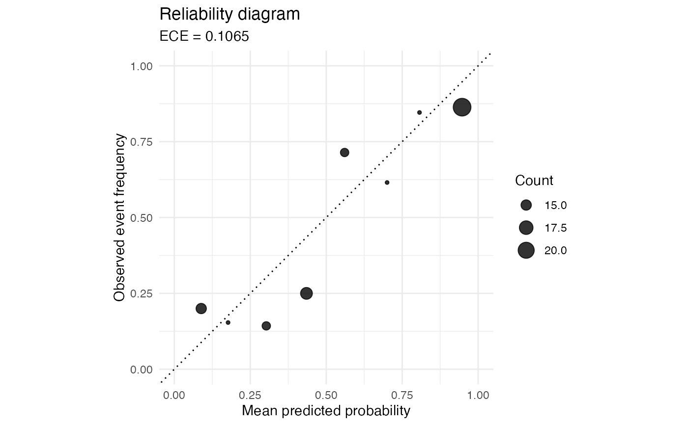
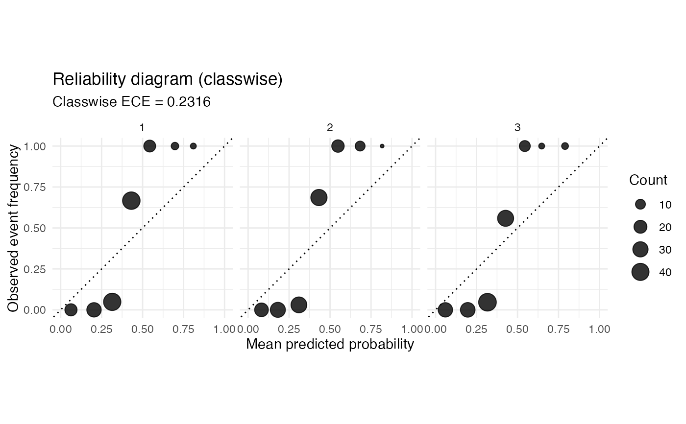

reliability_diagram() returns a ggplot2 object comparing mean predicted
confidence with the observed event frequency in equal-width probability bins.
By default, points are sized by the number of observations in each non-empty
bin and the subtitle reports the ECE computed with the same bins.
Usage
reliability_diagram(
p,
y,
bins = 10,
show_ece = TRUE,
show_counts = TRUE,
type = c("classwise", "confidence")
)Arguments
- p
Predicted probabilities. A numeric vector in
[0, 1]for binary problems, or a numeric matrix with one column per class for multiclass problems. Matrix inputs must have finite entries in[0, 1], at least two columns, and rows summing to one within absolute tolerance1e-6.- y
Outcome labels. A vector coded as
0and1for binary problems, or a factor or vector of integer class codes in1:Kfor multiclass problems.- bins
Number of equal-width bins on
[0, 1]. Must be a single positive integer.- show_ece
Logical. If
TRUE, include the ECE in the plot subtitle.- show_counts
Logical. If
TRUE, map point size to the number of observations in each bin.- type
Multiclass layout, either
"classwise"or"confidence". Ignored for binary inputs.
Details
For a probability matrix the function builds a multiclass diagram. The
"classwise" form draws one panel per class from the one-vs-rest view. The
"confidence" form draws a single panel from the top-label confidence and
whether the predicted class is correct.
The diagram is a visual version of the binned summaries used by ece(). For
binary inputs, the package uses the same left-closed equal-width bins as
ece(), with the last bin closed on the right. For each non-empty bin
\(b\), the x-coordinate is the mean predicted probability,
$$\operatorname{conf}(b) = \frac{1}{n_b}\sum_{i \in I_b} p_i,$$
and the y-coordinate is the observed event frequency,
$$\operatorname{acc}(b) = \frac{1}{n_b}\sum_{i \in I_b} y_i.$$
Points near the diagonal line have similar average confidence and empirical frequency within the bin. Points below the diagonal indicate over-confident predictions in that bin, and points above the diagonal indicate under-confident predictions. Empty bins are omitted from the plotted data. The diagonal reference line is the set where the bin mean predicted probability equals the empirical event frequency.
For multiclass inputs, type = "classwise" builds these summaries separately
for each one-vs-rest class and displays them in facets. type = "confidence"
replaces \(p_i\) by the top-label probability and \(y_i\) by the
indicator that the top-label prediction is correct. Ties in the top-label
rule are broken by the first column, matching max.col(..., ties.method = "first"). When show_ece = TRUE, the subtitle reports
ece(p, y, bins = bins) for binary inputs and
ece(p, y, bins = bins, type = type) for multiclass inputs.
References
Niculescu-Mizil, A., & Caruana, R. (2005). Predicting good probabilities with supervised learning. Proceedings of the 22nd International Conference on Machine Learning.
Examples
set.seed(6)
predictions <- data.frame(raw_p = stats::runif(120)) |>
dplyr::mutate(y = rbinom(dplyr::n(), 1, raw_p))
reliability_diagram(predictions$raw_p, predictions$y, bins = 8)

# Multiclass reliability diagram with one panel per class.
set.seed(60)
prob <- matrix(stats::runif(150 * 3), ncol = 3)
prob <- prob / rowSums(prob)
labels <- max.col(prob)
reliability_diagram(prob, labels, bins = 8, type = "classwise")
